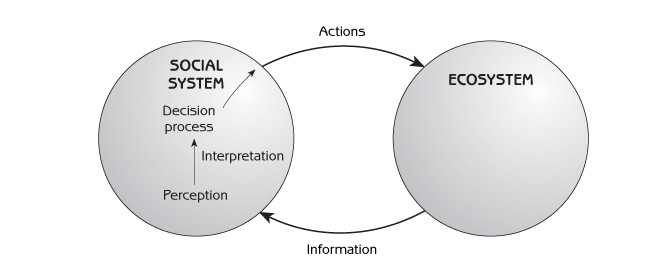

Human Ecology
Basic Concepts for Sustainable Development
Author: Gerald G. Marten
Publisher: Earthscan Publications
Publication Date: November 2001, 256 pp.
Paperback ISBN: 1853837148
Hardback SBN: 185383713X
Chapter 9: Perceptions of Nature
- Common perceptions of nature
- Attitudes of religions toward nature
- Notes of caution about romanticizing nature and traditional social systems
- Things to think about
People make sense of the complexity that surrounds them by carrying hundreds of images and ‘stories’ in their minds about themselves, their society and their biophysical environment - how each of these is structured, how each functions and interrelationships among them. Each image or story encapsulates a piece of their reality in a simplified form. Together, the images and stories form a person’s worldview - his perception of himself and the world around him. Shared images and stories form a society’s worldview. People and societies use their worldview to interpret information and formulate actions.
The images and stories that societies have about ecosystems are the basis for their perception of nature, which has a central role in shaping social system - ecosystem interaction. (‘Nature’ in this chapter refers to the entire biophysical world, including agricultural and urban ecosystems as well as natural ecosystems.) Perceptions shape the interpretation of information when it enters a social system from an ecosystem, and perceptions shape the decision-making process that leads to actions affecting the ecosystem (see Figure 9.1). Different cultures - and different people in the same culture - have different perceptions of how ecosystems function and how they respond to human actions. While every perception has a basis in reality, some perceptions of nature are more useful because they embrace reality more completely or accurately. Recognizing different perceptions can help to understand why different individuals and different societies interact with the environment in such strikingly different ways.

This chapter describes five common perceptions of nature. The first two perceptions - ‘everything is connected’ and ‘benign/ perverse’ - are major concepts in human ecology, but they are not restricted to scientists. The last three perceptions of nature - ‘fragile’, ‘durable’ and ‘capricious’ - are special cases of the ‘benign/perverse’ perspective. Each of these three perspectives represents a valid part of reality. However, each is less complete than ‘benign/perverse’ in ways that can cause people to interact with ecosystems without taking full account of the ways that ecosystems will respond to their actions.
Religion is a powerful way in which societies organize their worldviews and shape human behaviour. Hunter-gatherer societies regarded nature with awe and respect. Their spirit religions considered people to be an integral part of nature, basically no different from other animals. Religion changed with the Agricultural and Industrial revolutions. Western religions considered humans to possess a unique character that vested them with authority over nature, as well as responsibility for its integrity. Awe for nature diminished as Western societies achieved greater dominion, and responsibility gave way to exploitation. Respect for nature revived with the appearance of environmental problems in recent years.
Common Perceptions of Nature
Everything in nature is connected
People in traditional societies typically emphasize the fact that everything in nature is connected. They believe that many events are, directly or indirectly, a consequence of human actions, beyond human understanding. It is part of their culture to treat nature with careful respect in order to avoid adverse consequences. This perception of nature is similar to the concept in human ecology that human actions generate chains of effects that reverberate through ecosystems and social systems. The main difference between human ecology and the traditional perception that everything is connected is that traditional societies do not focus on the details of connections. Human ecologists are as explicit as possible about the details so that people can better understand and predict the consequences of their actions.
Nature is benign and perverse (the ‘okay/not okay’ principle)
Benign means ‘kind’ or ‘promotes well being’. Perverse is the opposite. This perception of nature states that nature is benign (ie, provides services we desire) as long as people do not radically change ecosystems from their natural condition (see Figure 9.2). In other words, the ecosystem is okay. However, nature can be perverse (ie, not provide all the services we need) if people change ecosystems to such an extent that they are unable to function properly. The ecosystem changes to a form that does not provide the services as well as before. In other words, the ecosystem is not okay. This perception of nature is the same as a switch from okay to not okay due to human-induced succession (see Chapter 6). The broad scope of the benign/perverse perspective and its confirmation by scientific observation make it particularly relevant to human ecology.
The following three perspectives are common special cases of the benign/perverse perspective. Each is incomplete because it emphasizes only one aspect of the broader reality captured by benign/perverse.
Nature is fragile
This view believes that nature has a delicate balance that will fall apart if people change ecosystems from their natural condition. It emphasizes the ‘not okay’ element of the ‘okay/not okay’ response of ecosystems to human actions. This perspective holds that small departures from natural conditions can lead to disastrous and irreversible consequences for ecosystems. Changing the ecosystem state even a little can move the ecosystem to another stability domain (see Figure 9.2). Of course ‘fragile’ does not mean that the ecosystem disappears. Every place always has an ecosystem, and it always will. Fragile means it is easy to change from one type of biological community to another.
Nature is durable
This perception of nature is the opposite of the ‘fragile’ point of view. It has been a common part of Western society’s worldview since the Industrial Revolution. It focuses on the ‘okay’ element of the ‘okay/not okay’ response of ecosystems to human actions (see Figure 9.2). This view holds that people can use and shape nature any way they want. Nature can meet any demands that people make on it, as long as people use the proper science and technology to extract the benefits that nature has to offer. If human activities damage ecosystems, science, technology and other human inputs can repair the damage or provide viable alternatives to natural ecosystem processes. No matter what people do to ecosystems, there are natural and social forces to prevent the ecosystem from being damaged so severely that it breaks down. People with this view of nature may believe that economic supply and demand protect ecosystems from overexploitation (see Chapter 8).
Nature is capricious
Capricious means ‘unpredictable’. This perspective emphasizes the random element in ecosystems. Many people, such as farmers and fishermen, who depend directly upon nature for their living, experience nature as highly variable and unpredictable. During some years the weather is good for crops; during others it is harsh and damages crops. Insect damage is severe during one year but not during another. During some years there are plentiful fish stocks; during other years there are not. People who view nature as capricious do not understand why nature is sometimes benign and sometimes perverse. Because the impacts of their activities can extend through long and imperceptible chains of effects through the ecosystem, they see little connection between what they do and the inevitable outcomes. This perception of nature supposes there are no strong natural forces to maintain ecosystems in particular way. Ecosystem state (the ball in Figure 9.2) is simply pushed around by ‘fate’ as nature acts at random.
Attitudes of Religions Toward Nature
Religion is a way in which societies use generations of accumulated wisdom to organize their values, perceptions and behaviour. It can have a major role in a society’s perception of the relation that people have with one another and with nature. Religions convey a sense of awe and respect for things larger than ourselves. Religious beliefs are a source of meaning; they tell us what is important in our lives. Religions offer moral codes - guidelines about right and wrong and rules of behaviour - that are particularly effective because they are reinforced by emotionally compelling beliefs, symbols and rituals. The importance of such moral codes for human - environment interaction is the balance they promote not only between the desires of each individual and the needs of others, but also between short-term desires and longer-term considerations, such as a concern for future generations.
Different religions can have significantly different perceptions about the relation of humans to nature and significantly different moral codes to guide human interaction with the environment. The following accounts explore the attitudes of major religions towards nature, without attempting a thorough description of each religion. While it is difficult to generalize about religions because they are complex, diverse and highly changeable over time, comparisons can illustrate the different perceptions that people and cultures have about the environment.
Spirit religions (animism)
Before the development of modern science, people explained nature through the presence of spirits. Spirits are invisible beings who exert power over weather, illness and other natural phenomena of significance to people. Spirits are different from modern science because spirits have human-like personalities, whereas scientific explanation of natural phenomena is objective and technical. Nonetheless, scientific explanations are remarkably similar to spirits in many ways. While science has made the functioning of nature more ‘visible’ (for example, bacteria and viruses causing disease, and the role of DNA in genetics and protein production in the body), many concepts of modern science are still as invisible as spirits. Invisible theoretical constructs, such as the gravitational field, the electromagnetic field and the subatomic particle, have impressive powers of prediction; but scientists do not know what they really are or why they function as they do.
Originally, spirits were a major part of all religions. Belief in spirits continued to be common in all societies, regardless of religion, until spirits were replaced by modern science. The religions of many tribal societies are still based on spirits, and spirit religion (such as Japanese Shinto) is still important in some modern societies.
Some spirits are the souls of dead ancestors who remain with the households of their descendants. Others spirits are gods responsible for various elements in nature. Spirits typically dwell in the bodies of plants, animals and conspicuous geographic structures such as large rocks, hills, mountains or lakes. Many spirit religions have two spirits that are particularly powerful: Creator of the Universe (who can also have names such as Great Spirit, Great Mystery or Life Giver) and the Spirit who Controls the Land (also called Mother Earth). Any plant, animal or site in which a spirit dwells is sacred and worthy of great awe and respect. Particular places are often considered sacred because they were part of mythological history. It is common for spirit believers to have sacred groves, such as natural forest ecosystems that no one is allowed to disturb. Sacred groves serve a practical function of maintaining natural ecosystems and biological diversity in landscapes that people have otherwise changed to agricultural and urban ecosystems.
Spirits are more than primitive explanations for natural processes. They serve as contacts for people to maintain harmonious relations with nature. They are like invisible ‘lords’ who have the power to help people; but if displeased, they can also harm people. For spirit believers it is important to respect the spirits and keep them happy. Spirit believers make an effort to pursue their daily lives - the way they hunt or gather food, work their farms and maintain their homes - so that the spirits will be pleased. Spirit believers make frequent ritual offerings to please the spirits (often a small amount of food prepared in a carefully prescribed manner). Many spirit believers do not think of this as religion. To them, it is simply their way of life.
The details of spirit religions vary among cultures. For example, Australian aborigines are nomadic hunters and gatherers with well-defined territories and a strong emotional and spiritual attachment to the land on which they live. Their land has a story, which began during ‘Dream Time’ many years ago when their spiritual ancestors shaped the land in its present form and gave rise to all living things, including people. Humans have a strong kinship with all other living things because people, plants and animals all came from the same ancestors. Aborigines believe this story continues into the present time, and every person is part of the story. The ancestors continue as spirits in hills, large rocks, plants, animals and people, and the strength and creativity that these spirits give to the land is responsible for its continuing fertility. For aborigines it is important to learn the story of their land - and the ways in which they are a part of the story - so that they can live their lives according to the story. Aborigines believe they have a responsibility to help maintain this creative process by performing rituals and making offerings to help sustain the ancestral spirits on the land. They see themselves as an integral part of the land, while continually recreating the land in their daily lives.
The traditional religion of Native Americans also includes the belief that land formations, plants and animals have spirits. All living things are equal inhabitants of the Earth. The entire world and everything in it is sacred, worthy of profound awe and respect. Animals have consciousness, feelings and personalities like people. On reaching adulthood, a Native American who follows traditional ways selects a guardian spirit associated with a particular kind of animal. This spirit serves as a lifelong source of personal guidance. The most important thing for Native Americans is harmony and balance in their relations with nature. Animals ‘give themselves’ to hunters only if people show proper respect. When people take from nature, they must give in return. Plants and animals will continue to provide food, clothing and shelter for people only if people thank the plant and animal spirits by appropriate ritual. Prayers and gifts to the spirits are a regular part of daily life. When gathering plants or hunting animals, Native Americans thank them for ‘giving themselves’ and apologize for taking their lives. They consider it important to show respect for nature by not being wasteful. They kill or harvest only what is needed, use every possible part of the plant or animal and dispose of unused parts in a ritually respectful manner. Lack of respect can bring misfortune. Not only will plant and animal spirits withhold their benefits, but animal spirits who are angered by disrespectful treatment can provoke human illness or accidents.
The Ainu are hunter-gatherers of northern Japan. While the Ainu consider humans and gods to be different in many ways, they perceive humans and gods to be similar in power and ability. Gods can provide things to humans that humans want, and humans can provide things to gods that gods want. The gods live in their own world, but they frequently visit the human world in the form of animals. The reason they visit is to trade with humans. When a hunter kills an animal, there is a god in the animal’s body. The god provides the animal’s body to the hunter, and the god returns to his own world. In exchange for the animal’s body, the Ainu give wine and beautifully carved sticks to the gods in ceremonies that can last for several days.
Eastern religions
The major Eastern religions such as Hinduism, Buddhism and Taoism are similar to spirit religions because spirits are part of their worldview. People are part of nature and have no special status in the eyes of God. However, the major religions are different from spirit religions because the myths and dogma of major religions are preserved in written form. Spirit religions are oral traditions whose customs and stories have passed from one generation to another by word of mouth.
Hinduism is the religion of India, as well as the island of Bali in Indonesia. The Hindu name for their religion is ‘the eternal essence of life’; it cannot be separated from daily life. For Hindus all life on earth is divine because it is a manifestation of their god Vishnu. Vishnu is part of everything. The universe is a cosmic person with consciousness; every part of the universe (land, plants, animals, people) has consciousness; everything is connected. All living things have souls that are exactly the same as people’s souls. When people die, their souls pass by reincarnation to the bodies of plants, animals or other people.
Hinduism’s ‘moral law of cause and effect’, karma, says that all thoughts, words and deeds of people affect everything in the world around them and come back to affect people. What we experience now is a consequence of past thoughts and deeds; present thoughts and deeds will lead to what we experience in the future. The benefits that people receive from the world are a consequence of people’s spiritual behaviour. Good spiritual behaviour is not taking more than one’s share and showing gratitude by giving. Hindus make daily offerings (such as small amounts of food) to God so that the Earth will be satisfied and continue to provide what they need.
Nature is very important in Hindu mythology. There are many stories about demons (evil demigods) who were damaging the Earth, so Vishnu took the form of an animal with super powers and came to the Earth to save it. The most beloved Hindu god is Krishna (another form of Vishnu), who lived a simple life herding cows in the forest. Hindus consider trees and forests to be sacred because they provide so many useful things to the gods in Hindu mythology (for example, shade, fruits and a peaceful place for meditation). Many animals are considered sacred, particularly the cow because of its nurturing role for humans.
Buddhism arose from Hinduism 2500 years ago. Many Buddhist ideas about the relation of people to nature are similar to Hinduism. People and nature are as one. Negative thoughts lead to negative actions and negative consequences. Although Buddhism considers the Buddha spirit to be in everything, Buddhism has no all-powerful god from whom Buddhists can request favours, protection or forgiveness. People must look into themselves for harmonious relations with the rest of the world. Demons are not external enemies; they are part of ourselves. A central philosophical idea of Buddhism is that the main cause of unhappiness is desiring things that we cannot have. Restraining desire is the key to happiness. Use of natural resources should be limited to satisfying basic needs such as food, clothing, shelter and medicine. Another major idea of Buddhism is reverence, compassion and loving kindness for all life forms. Animals should not be killed and plants should be harvested only to meet essential food needs.
For Chinese religions the universe is harmonious and complete. The universe was not created by a superior being separate from the universe itself. The universe is like a large living creature. Everything contains a vital energy, and everything is constantly changing. Opposites (such as good and evil), which appear to be in conflict with each other, are really complementary aspects (yin-yang) of a diverse and ever changing universe. Spirits are important in Chinese religion. Feng-shui is a spirit religion of southern China that provides guidelines on how people should use the land. Activities that damage the landscape are prohibited because they injure or offend ‘dragons’ or other powerful spirits that live in the land.
Taoism and Confucianism are two different views of the same Chinese themes. Tao (‘the Way’) emphasizes that nature is mysterious beyond comprehension. People do best by changing nature as little as possible, fitting in with nature’s rhythms and flows and tapping into nature’s energy instead of trying to dominate nature or control it. Confucianism emphasizes social relationships - the need for people to develop and refine their mutual responsibilities. For Confucianism, humans are children of nature; the proper attitude toward nature is filial piety (respect for elders). Because humans have an ‘elder brother’ relationship with nature’s other creatures, humans have a responsibility as custodians of nature to maintain nature’s harmony. Chinese culture has been a mixture of Taoism and Confucianism since these two religions originated 2500 years ago. Taoism has been dominant during certain periods of China’s history, and Confucianism has been dominant during others.
Western religions
Western religion began in the Middle East with Judaism. The main difference between Judaism and other religions during this time was Judaism’s belief in only one God. Other religions had numerous gods - gods who participated in creating the world and continued to be responsible for various parts of its functioning. For Jews there was only one God, with whom they had a strong historical connection because he was responsible for their survival as a people. Jews believed that ‘God created Man in his own image’. They did not consider themselves to be part of nature like other animals. God was obviously different from people in many ways, but people were similar to God (and superior to other animals) because of their ability to reason. Judaism believed that God created a wondrous, orderly and harmonious world, but it rejected the worship of nature because Judaism associated nature worship in other religions with belief in many gods.
Although Judaism’s God had absolute dominion over the Earth, Judaism believed that God was not involved in the everyday details of what happened in the world. Instead, God chose humans as his representatives to maintain God’s wisdom (ie, his natural order) on Earth while using and managing the Earth to meet their needs. God rewarded people who obeyed his commands about how people should live, and God punished those who did not obey. Although Jews considered nature to be sacred because it was God’s creation, their idea of managing the Earth for God was not to leave everything completely natural. The Agricultural Revolution dominated social change in the Middle East during the time when Judaism arose. Irrigation and cultivation of the first domesticated plants, such as wheat, barley, peas and olives, and the grazing of domesticated animals such as sheep and goats, were central to the survival strategies of Middle Eastern societies in an arid environment.
Christianity grew out of Judaism and inherited Judaism’s attitudes toward nature:
- Humans are superior to other animals.
- Nature is sacred because it is God’s creation.
- Humans have a responsibility as custodians of the Earth to maintain God’s natural order.
Early Christianity was also influenced by the ancient Greeks, who perceived nature as beautiful and harmonious, operating under its own laws with its own reality and its own power to survive. The Greek perception of nature was very different from Judaism, which perceived nature as dependent upon God.
Christ valued a simple life with a minimum of material consumption, an ideal that has continued until the present day in monastic traditions such as the teachings of Benedictine monks, who engage in a simple communal life ‘close to the Earth’. Francis of Assisi, the most famous of Christian saints to embrace the sanctity of nature, saw all creation - hills, water, plants, animals and the Earth itself - as loved by God and loving God. All living creatures were his spiritual brothers and deserved the same loving kindness that Christ advocated for the brotherhood of man. However, the deep concern for nature expressed by Saint Francis of Assisi was not part of mainstream Christianity. Christianity has always emphasized the relation of humans to each other and to God - not the relation of humans or God to nature. For Christianity, only humans have souls.
The early Christian belief that nature was sacred began to diminish about 400 years ago. As modern science provided new explanations for how nature functions, Western society began to view nature as a machine created by God, but apart from God, for people to manipulate and use as they wish. The Protestant Reformation led to further departure from the attitudes of early Christianity toward nature. The extreme was expressed in Calvinism, which had a major influence on Northern European and American culture during the past 300 years and included the belief that people whom God chose for salvation and eternal life in heaven were rewarded with material wealth on Earth. Wealth acquired a positive spiritual value, even if obtained through the destructive exploitation of nature. Europeans who colonized America and exploited the land for material wealth could rationalize taking land from Native Americans because they were not ‘using’ the land to generate wealth as God intended.
With the advent of the environmental crisis in recent years, many Christians are turning to earlier Christian values for guidance on the relationship that humans should have with nature. Once again they consider nature to be sacred because it is God’s creation and a manifestation of God on Earth. Many Christians now recognize the spiritual kinship of humans with all living things. The World Council of Churches promotes the preservation and restoration of the natural environment, advocating policies which recognize human responsibilities not only to other people but also to all fellow creatures and the whole of creation.
Islam was strongly influenced by Judaism and Christianity when it was founded by the prophet Mohammed about 1300 years ago. Islam believes that a benevolent and compassionate God created an orderly universe. Nature is sacred because it is God’s creation, and God’s will is present in every detail. As in Judaism, God granted to humans the privilege of using all of his creations on Earth and the responsibility of caring for them. The Koran contains detailed instructions from God on how people should do this, instructions that were subsequently elaborated into Islamic law which every Muslim is expected to follow. The main message of Islamic law on human - environment relations is that people should not use more than they need, and they should not be wasteful of what they use. Land for grazing livestock or collecting wood should be held in common ownership for the entire community to use, and irrigation water should be shared by all. A wild animal can be killed only if it is needed for food or is a threat to crops or livestock, and when trees are cut, they should be replaced by planting more trees. However, as with Christianity, nature has never been a principal concern of Islam, which considers the afterlife and every person’s relation with God to be more important than the material world and the transient life of humans on Earth.
Contemporary attitudes towards nature
Although many people in industrialized nations today do not consider themselves religious in the sense of participating actively in an organized religion, everyone, in fact, has beliefs that deal with the same matters as organized religions do, and everyone participates in social rites to reaffirm those beliefs. Self-actualization, materialism and a coherent worldview associated with capitalism, free enterprise, economic growth and the global economy have become major components of our worldview. Shopping has become a major ritual. High priests are economic advisors, multinational corporation executives and entertainment celebrities. Such developments in our modern worldview have far-reaching consequences for human - ecosystem interaction. Demands for consumer goods, and consequent demands for ecosystem services, are driven by a socially defined need for consumption that extends far beyond that required for a decent life.
On the other hand, a growing number of people feel a strong spiritual connection with the natural world independently of whether they participate in an organized religion. Some have invested their spiritual energy in green political movements. Some westerners have been attracted to exploring eastern religions, Native American spirituality or other religions that have a conspicuous focus on respect for nature. The New Age movement has also provided an outlet for those who wish to emphasize their spiritual connection to nature.
Notes of Caution about Romanticizing Nature and Traditional Social Systems
Humans are completely dependent upon nature for their sustenance. There are good reasons to be sensitive to how nature functions and to strive for human activities that are compatible with nature. It makes sense to work with nature and have nature working for us, instead of fighting nature. However, this does not mean that everything completely natural is good for people. Nature is not designed to provide special privileges for the human species. People have always found it useful to modify ecosystems so that they function in ways which serve human needs.
In a similar manner, we should be careful not to romanticize tradition. The interaction of traditional societies with their environment is often more sustainable than the interaction of modern society because many traditional social systems have coevolved with their ecosystems for centuries. They are coadapted. Modern society can benefit from traditional wisdom, but we should appreciate traditional societies for what they really are, not what we want them to be. Not all traditional societies have healthy relationships with the environment, nor have they always had in the past. If they do have healthy relationships with the environment, it is for reasons that go beyond romantic concepts such as harmony with nature. It is for practical reasons related to dependence on their environmental support systems - landscapes and biological communities that provide essential material resources such as food and shelter along with emotional resources such as beauty.
Traditional practices are not always better. The social institutions and technology of traditional societies are a product of the environmental conditions in which those societies evolved. They may or may not be appropriate for modern circumstances. The challenge for modern society is to perceive and interact with ecosystems in ways that not only serve our needs but also do so on a sustainable basis. There are no easy recipes for sustainable development in today’s rapidly changing world.
Things to Think About
- What was your perception of nature before reading this book? What is your perception of nature now? If it has changed, why do you think it changed? Remember that “nature” has a broad meaning in this context. It refers to the entire biophysical world, including natural, agricultural and urban ecosystems. Also keep in mind that you may have more than one perception of nature. It could be a combination of two or three different perceptions.
- Environmental issues can be highly controversial. It is not unusual for different people to have radically different opinions. Think about some issues that have received considerable public attention. In what ways does the controversy seem to come from different perceptions of nature?
- Tell a “story” about your nation’s relationship with nature. It can be an historical account that explains how the present relationship with nature evolved from the past, or the story could take another form such as a traditional folk story.
- What are the main belief systems of your society today? They may include major religions, but they may also include belief systems that are not part of established religions. Be specific about what the beliefs have to say with regard to:
- Who am I?
- What is the meaning of my life?
- What is my relation to other people and the rest of the world?
- What do I respect? What is important?
- What is good? What is right?
- What should I do? How do I know what I should do?
- What kind of relation should people have with nature? What are the shared beliefs in your society? Do different people in your society have fundamentally different beliefs in some respects? Are there ways that you consider your beliefs to be different from the prevailing beliefs in your society? Think about where your society’s beliefs come from? How do people acquire them? Who are the “priests” that interpret and disseminate the beliefs?